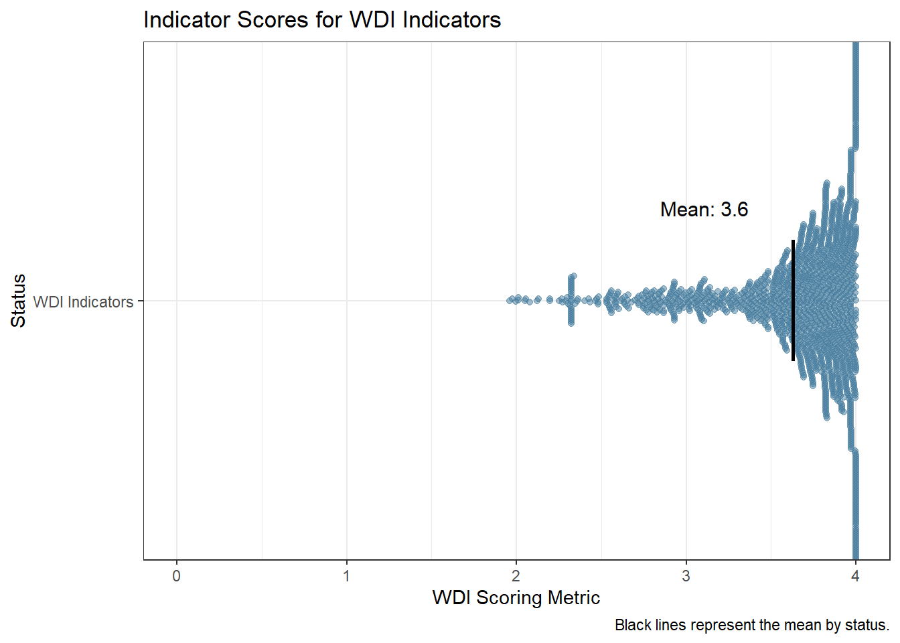

The World Development Indicators (WDI) is the World Bank’s premier compilation of cross-country data on global development. As a crucial input into research, analysis and policy formulation, it is imperative that the WDI maintains high standards of data quality, relevance and accessibility. This short document applies a set of quantitative criteria used to evaluate potential indicators for inclusion in the WDI. A WDI criteria framework, adapted from Jolliffe et al. (2023), covers four key areas - ease of use, trustworthiness and relevance, adequate coverage, and high quality. Within each area, specific dimensions are defined to comprehensively assess whether an indicator meets the stringent requirements of the WDI (Table 1).
Table 1: Framework for Indicator Selection in the WDI. Modified from Jolliffe et al. (2023)
| Area | Dimension | Definition |
|---|---|---|
| Easy to Use | Accessible | Data is machine-readable and available to intended users with an open license. |
| Understandable | Data has clear metadata. | |
| Interoperable | Data can be linked to other sources through common identifiers and standards. | |
| Trusted & Relevant | Impartial | Data is immune to influence from stakeholders that could alter or censor it. |
| Confidentiality Protected | Personal and sensitive information is protected. | |
| Development Relevance | Data that aligns with and supports internationally adopted development goals, priorities, and frameworks like the Sustainable Development Goals (SDGs), the World Bank’s mission and strategies, climate agreements, etc. | |
| Adequate Coverage | Complete | Data represents the entire population of interest, geographically or otherwise. |
| Frequent | Data is produced at regular, desired intervals based on the temporal dynamics of the outcome. | |
| Timely | Data is released shortly after collection or occurrence of an event. | |
| High Quality | Accurate | Data measures intended concepts with minimal error, both in terms of variance and bias. |
| Comparable | Data conforms to standards and is comparable across space and time. | |
| Granular | Data can be broken down into relevant subgroups like geography, time, sex, etc. |
While this conceptual framework provides the guiding principles, a set of quantitative metrics allows for rigorous benchmarking of indicators against observable criteria related to data coverage, timeliness, transparency and usefulness. Together, the qualitative framework and quantitative metrics form the basis for structured monitoring to ensure the WDI remains a premier repository of development data.
The quantitative metrics used to monitor the WDI are defined below:
Easy to Use
Trusted & Relevant
Adequate Coverage
The WDI contain a set of 1,490 indicators. The table below provides a snapshot of the monitoring data as of February 03, 2025, which includes the quantitative metrics for each indicator.
Table 2: Monitoring Data for the World Development Indicators
| Characteristic | N = 1,4901 |
|---|---|
| Missing Metadata | |
| Missing metadata field(s) | 778 (52%) |
| No missing metadata | 712 (48%) |
| License Type | |
| Attribution-NonCommercial 4.0 International (CC BY-NC 4.0) | 12 (0.8%) |
| CC BY-4.0 | 1,447 (97%) |
| Use and distribution of these data are subject to IEA terms and conditions. | 24 (1.6%) |
| Use and distribution of these data are subject to Protected Planet terms and conditions. | 3 (0.2%) |
| Use and distribution of these data are subject to Stockholm International Peace Research Institute (SIPRI) terms and conditions. | 4 (0.3%) |
| Count of Unique Visitors past 12 months | 1,706 (2, 1,463,918) |
| Number of Economies | 185 (2, 217) |
| Percent of LMICs | 94 (0, 100) |
| Most Recent Year (Median) | 2022 (2004, 2023) |
| Most Recent Year (Max) | 2022 (2008, 2023) |
| Span of Years | 50 (1, 64) |
| Non-missing Data (%) | 64 (4, 100) |
| 1 Median (Min, Max) | |
The various quantitative metrics outlined above are combined into a composite index to provide an overall assessment of an indicator’s suitability for inclusion in the WDI database. The index aggregates the performance of each indicator across the different criteria, allowing for a transparent and systematic evaluation process. The figure below shows the distribution of index scores across the current set of 1,484 WDI indicators. The index has a maximum score of 4 and a minimum score of 0, with higher scores indicating better performance across the criteria.

The table below provides a breakdown of the average indicator scores by theme, allowing for a more granular understanding of the performance of indicators across different areas. The table shows the average score, minimum score, and maximum score for each theme, along with the indicators with the lowest and highest scores within each theme.
Table 3. WDI Indicator Scoring by Theme
Average Indicator Score by Theme | |||||
|---|---|---|---|---|---|
Topic | Weighted Distant to Threshold Score | Min |
| Max |
|
Employment and Time Use | 3.94 | 3.94 | Women Business and the Law Index Score (scale 1-100) | 3.94 | Women Business and the Law Index Score (scale 1-100) |
Trade | 3.81 | 3.81 | Logistics performance index: Efficiency of customs clearance process (1=low to 5=high) | 3.81 | Logistics performance index: Efficiency of customs clearance process (1=low to 5=high) |
Infrastructure | 3.76 | 3.29 | Pump price for gasoline (US$ per liter) | 4.00 | Air transport, registered carrier departures worldwide |
Environment | 3.62 | 2.30 | PFC gas emissions (thousand metric tons of CO2 equivalent) | 4.00 | Fertilizer consumption (kilograms per hectare of arable land) |
Poverty | 3.59 | 2.82 | Annualized average growth rate in per capita real survey mean consumption or income, bottom 40% of population (%) | 3.81 | Poverty headcount ratio at $2.15 a day (2017 PPP) (% of population) |
Education | 3.58 | 2.50 | Male pupils below minimum reading proficiency at end of primary (%). Low GAML threshold | 3.98 | School enrollment, secondary (% gross) |
Public Sector | 3.55 | 2.98 | Human capital index (HCI), male, lower bound (scale 0-1) | 3.98 | Arms imports (SIPRI trend indicator values) |
Financial Sector | 3.51 | 2.75 | Claims on other sectors of the domestic economy (% of GDP) | 3.95 | Domestic credit to private sector (% of GDP) |
Private Sector & Trade | 3.49 | 2.52 | Public private partnerships investment in ICT (current US$) | 3.98 | Net barter terms of trade index (2000 = 100) |
Health | 3.46 | 1.90 | Condom use, population ages 15-24, female (% of females ages 15-24) | 4.00 | Mortality rate, under-5 (per 1,000 live births) |
Economic Policy & Debt | 3.46 | 1.89 | Net official flows from UN agencies, UNCTAD (current US$) | 4.00 | Foreign direct investment, net outflows (BoP, current US$) |
Social Protection & Labor | 3.30 | 1.69 | Children in employment, self-employed, male (% of male children in employment, ages 7-14) | 4.00 | Net migration |
Gender | 2.60 | 2.18 | Women who believe a husband is justified in beating his wife when she goes out without telling him (%) | 3.96 | Proportion of seats held by women in national parliaments (%) |